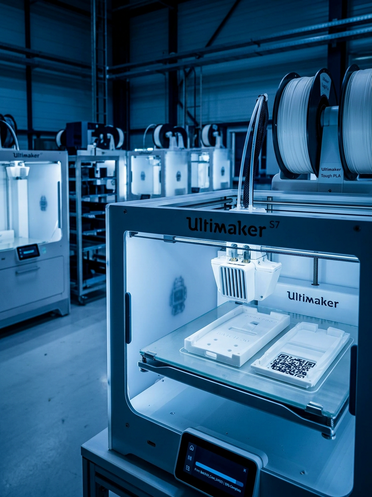

Project Overview
This project explores end-to-end digital manufacturing of
3D printed phone casings using FDM technology,
integrated with Industry 4.0 systems including simulation,
automation, and digital traceability.

PrintCity Additive Manufacturing Lab

Industry 4.0 Smart Factory Concept